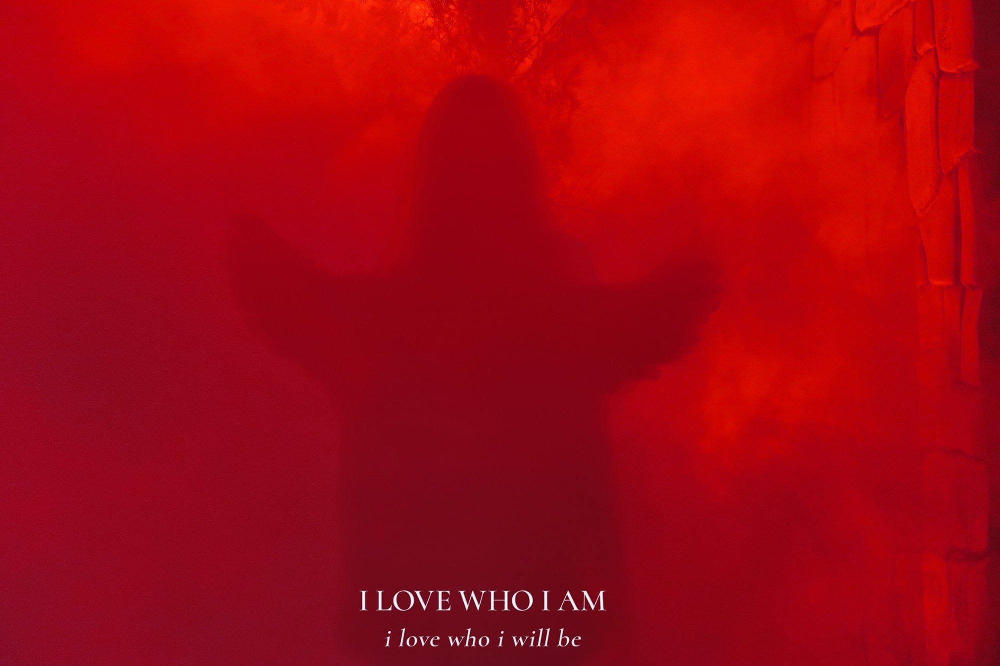

Ancient arts.
Modern souls.
East meets West.
融合東西方玄學傳統，透過占卜、占星、療愈與魔法儀式，協助您在迷惘之際重獲清晰，找到屬於自己的方向。
Drawing from both Eastern and Western traditions — divination, astrology, healing and ritual magic — to help you find clarity when you need it most.
HERO
PHOTO
塔羅並非預言未來，而是幫助您看清當下的處境與內心深處已知的答案。適用於感情、事業及人生方向。
Tarot helps you see clearly — not predict the future, but illuminate what's already there.
較塔羅更為直接、具體的占卜系統，以精準務實見稱，適合尋求明確答案的提問。
More direct and concrete than tarot — known for precision when you need a clear answer.
中國傳統占卜術，無需生辰八字，以問題浮現之時起卦，快速準確。
A traditional Chinese divination method — no birth date needed, fast and accurate.
以提問當下的時刻起盤，無需出生資料，借助宇宙的啟示給予解答。每件事一問一答。
A chart cast at the exact moment your question arises. No birth data required — the cosmos provides the answer. One question, one answer per matter.
採用古典占星（有別於現代占星及印度占星），深入解讀您天生的性格特質、人生主題與命運走向。
Classical Western astrology — distinct from modern or Vedic. A thorough reading of your natal chart.
古典占星流年盤，解讀當年的運勢走向與重點發展方向。
Classical solar return reading — what the year ahead holds.
以盧恩符文、儀式典禮及北歐魔法傳統為核心，根植於古老術法，而非形式上的展示。
Rooted in runes, ceremonial ritual and Norse magical tradition — the genuine practice.
以古希臘魔法紙草文獻（PGM）為基礎，結合占星時機與振動頻率，達至即時顯化。
Based on the Greek Magical Papyri — combining astrological timing with vibrational frequency.
提供儀式預約，亦可訂製魔法產品，包括精油、蠟燭及法術瓶等，將魔法力量融入日常生活。
Ritual sessions plus custom magical products — oils, candles and spell bottles.
透過宇宙生命能量的傳導，平衡身心能量，舒緩壓力與情緒困擾，恢復內在活力。
Channelling universal life energy to restore balance in body and mind, relieving stress and restoring vitality.
你的潛意識操控著你的人生，而你卻稱之為命運。運用靈擺清除潛意識中的負面程式與能量阻塞，協助提升個人振動頻率，重整生命能量場。
Your subconscious controls your life — what you call destiny is often just programming. Pendulum work clears negative patterns and restores your energy field.
透過清理限制性信念，協助您在深層意識中重建正面的生命模式，改善各方面的生活質素。
Clearing limiting beliefs at a subconscious level to create positive life patterns across all areas of wellbeing.
凡參與救援、中途、捐款或志工等公益行動，預約 BIFROST HEALING「動物靈性項目」皆享當次個案 7 折優惠。預約時請出示相關憑證，這是 Amelia 的一點心意，謝謝你們對動物的付出，希望這份療愈能帶給你和寶貝溫暖的支持。
Those involved in animal rescue, fostering, donation or volunteer work enjoy a 30% discount. Please show proof at the time of booking.
Please note — All metaphysical and healing services are not a substitute for medical or psychological treatment. Please consult a qualified professional if you have health concerns.

現居澳洲布里斯班，正職為會計師，同時從事美甲藝術。擅長以冷靜邏輯分析問題，然而天生敏銳的感知力使其分析從不止於理性，直覺始終是判斷的一部分。
Based in Brisbane, Australia. An accountant and nail artist by trade — analytical and grounded by nature, but with an intuitive sensitivity that has always informed the work.
多年深研占卜、占星及巫術，橫跨西方神秘學與東方玄學。每位客人的情況各有不同，服務因人而異，沒有固定公式。
Years of dedicated study across divination, astrology and magic — both Eastern and Western. Every session is tailored; there is no one-size-fits-all approach.
PHOTO
現居台灣，致力於能量療癒與靈魂進化的藝術。專注於深層療癒、阿卡西紀錄與通靈傳訊，將多維度的靈性實踐與水晶的紮根能量交織，提供轉化性的引導與能量運用課程。
Based in Taiwan, dedicated to the art of energy healing and spiritual evolution. With a focus on deep soul-level healing, Akashic Records, and channeling, Amelia weaves multi-dimensional spiritual practices with the grounding essence of crystals, offering transformative guidance and energy mastery courses.
研習東西方玄學多年，擅長疊加古老智慧以照亮現代生活的挑戰。在累積數百位個案經驗後，她致力於將艱澀的靈性洞見轉化為觸手可及的日常療癒，協助人們在現代叢林中找回內在的靜謐，並以平衡且覺醒的心生活。
A practitioner of Eastern and Western mysticism, skilled in layering ancient wisdom to illuminate modern-day challenges. Having guided hundreds of souls, she specializes in translating complex spiritual insights into tangible, everyday healing. Her mission is to help individuals reclaim their inner stillness and navigate the modern world with a balanced, awakened heart.

Send a DM on Instagram or reach out via any contact above.